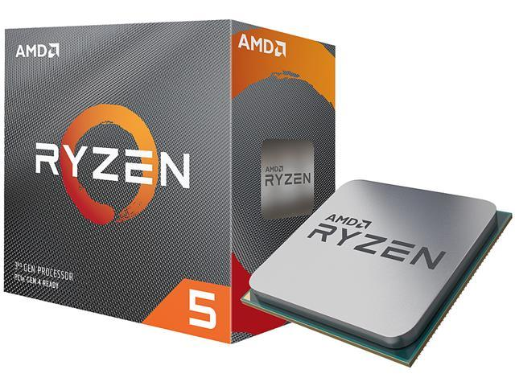

Top 1 - Ryzen 5 3600
É a cpu que eu tenho e por isso é objetivamente a melhor
É a cpu que eu tenho e por isso é objetivamente a melhor

Azul é bonito e tem uma performance decente

É potente mas caro

Muito bom mas é caro, um Ryzen 5 3600 chega

Intel ta a morrer vale mais comprar um AMD FX-8350